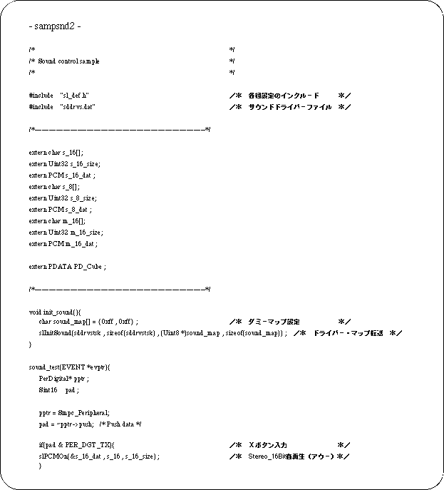
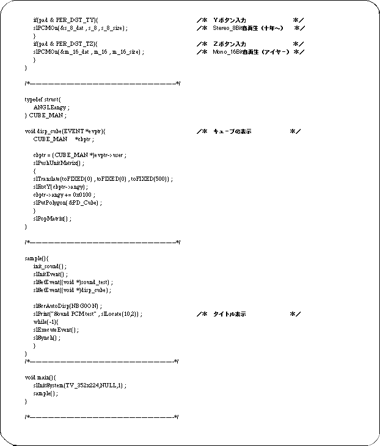
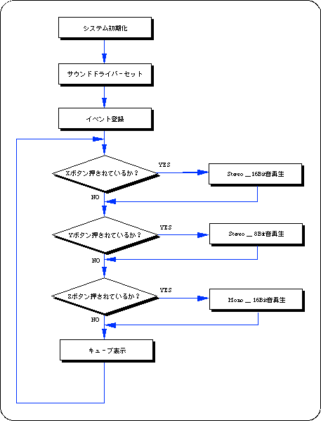
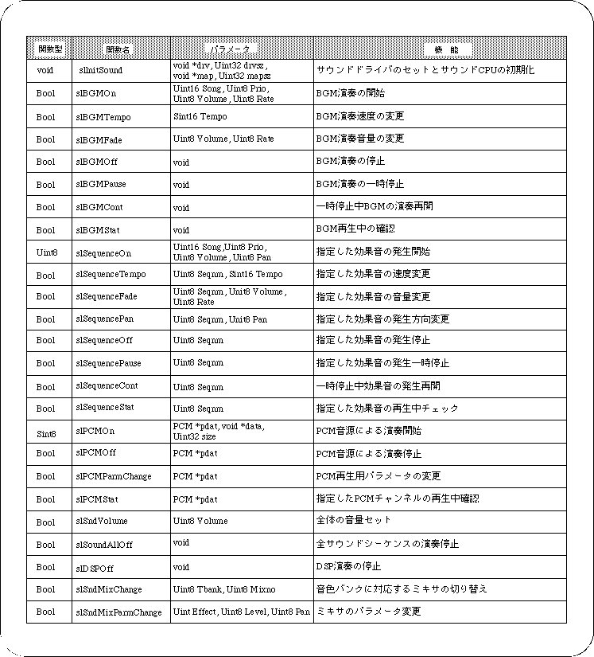

Return to previous page | Return to menu
The following sample program was created for testing PCM sound source playback.
There are three types of sample data for PCM sound sources: 16-bit stereo, 8-bit stereo, and 16-bit monaural, which are played back by the X button, Y button, and Z button inputs, respectively.



In this chapter, the functions in the following table were explained.
